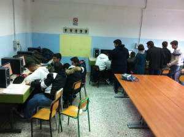

Continua il nostro supporto al progetto A Scuola di OpenCoesione . La terza lezione ha avuto luogo nella scuola pilota napoletana, l’ITI Augusto Righi, la settimana scorsa ed è stato sorprendente notare quanto in poche settimane il gruppo di ragazzi che sta lavorando al progetto abbia fatto passi da gigantenel lavoro.
A chi si è perso qualche puntata e non ha letto post precedenti accenniamo solo che A Scuola di OpenCoesione è un progetto sperimentale di didattica nelle scuole sui temi dell’open government che nasce nell’ambito di OpenCoesione, grazie a un Accordo tra il DPS – Dipartimento per lo sviluppo e la coesione economica e il MIUR – Ministero dell’Istruzione, dell’Università e della Ricerca. L’obiettivo è di coinvolgere e sensibilizzare studenti e insegnanti all’utilizzo di contenuti e strumenti per
- conoscere e monitorare i progetti delle politiche di coesione;
- costruire percorsi didattici interdisciplinari a partire dai progetti finanziati sui rispettivi territori;
- arricchire, tramite crowdsourcing, la base informativa di OpenCoesione aggiungendo informazioni e dati che non sono al momento disponibili.
Come OpenPompei stiamo supportando il progetto accompagnando nella scuola pilota campana il team di A Scuola di OpenCoesione nelle incursioni in aula , che sono solo una parte del percorso didattico.
Qualche settimana fa, come si legge anche dallo stesso blog degli studenti che partecipano al progetto, li avevamo lasciati decisi a lavorare su due argomenti: il tema dei trasporti e l’area di Bagnoli. Dopo qualche settimana ci accolgono con le prima ricerche di dati alla mano sui progetti finanziati dalle politiche coesione relativi alle tematiche individuate e li troviamo provetti utilizzatori delle tecniche di scraping (tecnica per l’estrazione di dati da pdf e HTML) apprese durante la seconda lezione grazie alla guida di Andrea Nelson Mauro, data journalist del team di A Scuola di OpenCoesione. Il contributo di OpenPompei in questa terza lezione, insieme ad Ilaria Vitellio (“mamma” di MappiNA), è stato quello di ragionare insieme ai ragazzi e al team di A Scuola di OpenCoesione sui metodi di ricerca più coerenti ed efficaci per il loro progetto e conseguentemente riflettere e discutere sui contenuti da cercare durante le visite di monitoraggio ai progetti relativi alle tematiche individuate.
{kind=link}
Adesso si passa alla fase forse più avvincente: fuori dalla scuola a monitorare, persone da contattare e intervistare, informazioni sulle quali discutere e ragionare. E anche noi di OpenPompei siamo impazienti di affiancare A Scuola di OpenCoesione in questo viaggio di scoperta.